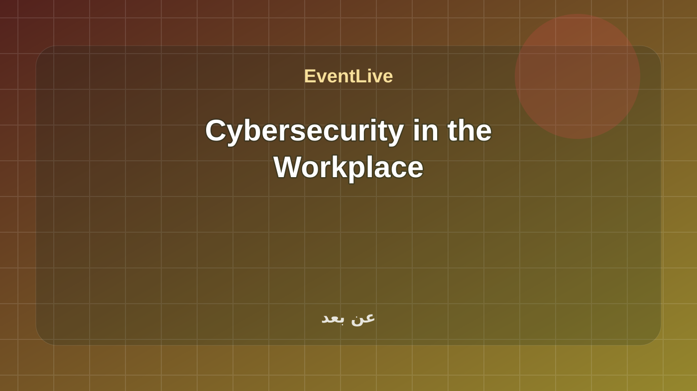
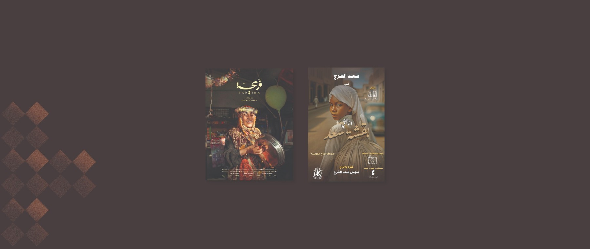
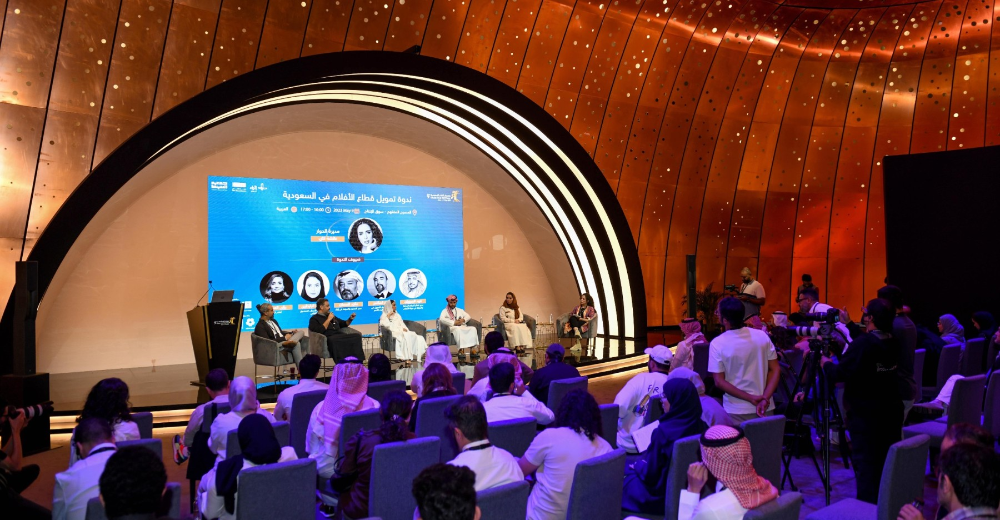

تابع باحثون عن عمل
هذه الروابط تتحدث مع كل بناء وتعرض الفعاليات القادمة والجارية لهذا السياق فقط.
باحثون عن عمل في EventLive مع الفعاليات القادمة والجارية والمنتهية ومصدر كل فعالية.
هذه الروابط تتحدث مع كل بناء وتعرض الفعاليات القادمة والجارية لهذا السياق فقط.
The Misk Local Traineeship Program connects promising Saudi talent with employers, providing hands-on experience, career mentorship, and high-quality opportunities that enhance job readiness and support a confident transition into the workforce. المصدر الرسمي: Misk Hub.

The Misk Local Traineeship Program connects promising Saudi talent with employers, providing hands-on experience, career mentorship, and high-quality opportunities that enhance job readiness and support a confident transition into the workforce. المصدر الرسمي: Misk Hub.
تفاصيل الحضور
Misk's 2030 Leaders program provides a bespoke leadership journey equipping experienced, influential leaders, to challenge convention, lead the nation, and realize Vision 2030 goals. المصدر الرسمي: Misk Hub.
تفاصيل الحضور
A program designed to equip aspiring data scientists and AI professionals with skills to excel in artificial intelligence المصدر الرسمي: Misk Hub.
تفاصيل الحضور
Program Objectives Program Information Program Achievements FAQs Program Format In-Person Program Type Instructor Paced Language English Entrepreneur Leadership Excellence Program Cohort Program Start/End Date 27 Jul - 29 Jul 2026 Applications open 17 May 2... المصدر الرسمي: Misk Hub.
تفاصيل الحضور
Is a unique initiative designed to both enhance and develop the capabilities of professionals already working in the nonprofit sector, and to empower those aspiring to join this field. المصدر الرسمي: Misk Hub.
تفاصيل الحضور
Eligibility Criteria المصدر الرسمي: Misk Hub. Misk X UNYO Youth Engagement Fellowship ضمن تدريب تقني في السعودية. تبدأ الفعالية ٠١/٠٩/٢٠٢٦، ٩:٠٠ ص وتنتهي ٠١/٠٣/٢٠٢٧، ٦:٠٠ م حسب البيانات المتاحة. تعرض الصفحة وقت الفعالية وموقعها ومصدرها وروابط التقويم والاتجاهات عند توفرها. المصدر: Misk Hub Programs.
تفاصيل الحضور
فعالية رسمية من غرفة الشرقية. الموقع: شركة معارض الظهران الدولي. التاريخ المعلن: خلال الفترة مــــــــن (1-4 سبتمبر 2026م )في مقر شركة معارض الظهران الدولي وحيث تتطلع غرفة الشرقية لحضوركم ومشاركتكم فإننا نؤكد لكم تقديرنا الكبير لهذه المشاركة واعتزازنا .
تفاصيل الحضورProducers have a strong intuition that allows them to uncover hidden stories and present them in a cohesive, professional, and engaging way. This means producers are always "on" in their daily lives—at family gatherings, waiting at traffic lights, chatting with the car service driver, or navigating heated debates at social events. Production isn’t just a job; it’s a lifestyle and a mindset. In this comprehensive course, participants will gain the essential skills and foundational knowledge needed to create a complete, professional podcast episode. The curriculum covers every stage of the process: identifying and refining ideas into compelling episode topics, conducting fiel
تفاصيل الحضور
A national initiative aimed at enhancing creativity and innovation among young Saudi youth by providing youth with the opportunity to present solutions to community challenges. المصدر الرسمي: Misk Hub.
تفاصيل الحضور
A 10-week hybrid pre-accelerator program supporting entrepreneurs to validate ideas, build MVPs, and prepare startups for launch through structured, comprehensive support. المصدر الرسمي: Misk Hub.
تفاصيل الحضور
فعالية مدرجة في التقويم الرسمي لـ Dhahran Expo. الموعد: ٢٧ سبتمبر ٢٠٢٦ في ٠٩:٠٠ ص إلى ٢٩ سبتمبر ٢٠٢٦ في ٠٦:٠٠ م. المنظم: Sharqia Chamber.
تفاصيل الحضور
فعالية رسمية من غرفة الشرقية. الموقع: شركة معارض الظهران الدولي. التاريخ المعلن: خلال الفترة مــــــــن (1-4 سبتمبر 2026م )في مقر شركة معارض الظهران الدولي وحيث تتطلع غرفة الشرقية لحضوركم ومشاركتكم فإننا نؤكد لكم تقديرنا الكبير لهذه المشاركة واعتزازنا .
تفاصيل الحضور
Within the Misk Career Essentials Program, we provide young people with the opportunity to acquire the necessary skills and knowledge in various fields through sessions that focus on raising awareness among youth about promising sectors and the most sought-after skills for success in the future job market. Join Now!
تفاصيل الحضور
Fariha When Farah, a 70-year-old Yemeni singer, meets the young director Badr, the two set out on a journey to revive Farah’s long-lost singing career. The Bundle of Saad documentary that follows the life and artistic journey of veteran actor Saad Al-Faraj, tracing his career spanning over 50 years—from his early life in the village of Fintas, to his move to Kuwait in the 1950s, his involvement with the Popular Theatre troupe, and his influence by Zaki Tulaimat—revealing how he helped shape the foundations of Kuwaiti and Gulf theatre as a witness to a pivotal artistic and historical era.
تفاصيل الحضورA magic trick goes horribly wrong when two brothers attempt to replicate it years after learning it from their father. Mohammed Al-Ibrahim Mohamed Al Ibrahim is a writer and director who holds honorary degrees in Criminal Justice, as well as Film Studies. He began his career with the short films Land of Pearls (2010) and Bidoon (2013), which toured the regional festival circuit and have won awards. Mohamed has since written and directed numerous commercial projects as Head of Longform for Katara Studios, which include the Arabic Arhbo music video, a song for the Fifa World Cup Qatar 2022, which has since surpassed 100 million views on Youtube. Mohamed is currently the writer and director of
تفاصيل الحضور
This panel sheds light on the experience of low-budget filmmaking as one of the production models adopted by filmmakers. Are these films an opportunity to assert a distinctive creative voice? A conscious artistic choice? Or merely a transitional phase in the careers of directors and producers on their way to larger-scale projects? The panel brings together filmmakers who have worked across productions of varying budget scales to share their perspectives on the challenges involved, the creative choices available, and the potential solutions that may support this mode of production and contribute to its sustainability.
تفاصيل الحضورHayat, a believer in superstitions, is convinced that an inherited curse will kill her on her thirtieth birthday. Yusuf, a brilliant but introverted heart surgeon, suffers from a slow heartbeat that only quickens when holding a scalpel. Together, they plan a mad scheme to cheat death, igniting a chain of chaos, comedy and an impossible love racing against time. Anas Batheef Anas Batheef is a multidisciplinary filmmaker who continuously re-examines himself through works that delve into themes such as identity, belonging, nostalgia, childhood traumas and their psychological effects. He began his career at an early age, working on major local commercial shoots across various industries, gaining
تفاصيل الحضورA quiet night turns upside down for a couple when an uninvited guest appears at their door—forcing the husband to conceal a long-buried secret as he tries to control the escalating chaos… or risk losing his marriage forever. Mohammed Makki Mohammed Makki is a Saudi director and writer from Jiddah, known for his cinematic style that combines psychological realism with intense drama. He began his career creating digital content and socially-driven storytelling, before gaining significant recognition through his writing and direction in the acclaimed series Taki (2012), one of the most notable contemporary Saudi dramatic works. Makki has a unique ability to craft complex characters
تفاصيل الحضور